[TOC]
一、redis搭建哨兵原理和集群实现 1.1、搭建哨兵的原理 ①专门的Sentinel 服务进程是用于监控redis集群中Master工作的状态，当Master主服务器发生故障的时候，可以实现Master和Slave的角色的自动切换，从而实现系统的高可用性
②Sentinel是一个分布式系统,即需要在多个节点上各自同时运行一个sentinel进程，Sentienl 进程通过流言协议(gossip protocols)来接收关于Master是否下线状态，并使用投票协议(Agreement Protocols)来决定是否执行自动故障转移,并选择合适的Slave作为新的Master
③每个Sentinel进程会向其它Sentinel、Master、Slave定时发送消息，来确认对方是否存活，如果发现某个节点在指定配置时间内未得到响应，则会认为此节点已离线，即为主观宕机Subjective Down，简称为 SDOWN
④如果哨兵集群中的多数Sentinel进程认为Master存在SDOWN，共同利用 is-master-down-by-addr 命令
互相通知后，则认为客观宕机Objectively Down， 简称 ODOWN
⑤接下来利用投票算法，从所有slave节点中，选一台合适的slave将之提升为新Master节点，然后自动修改其它slave相关配置，指向新的master节点,最终实现故障转移failover
注意：Redis Sentinel中的Sentinel节点个数应该为大于等于3且最好为奇数
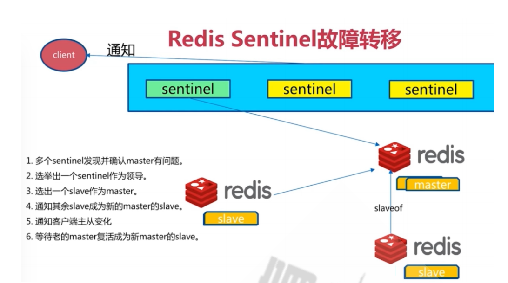
1.2、搭建集群 1.2.1、集群架构 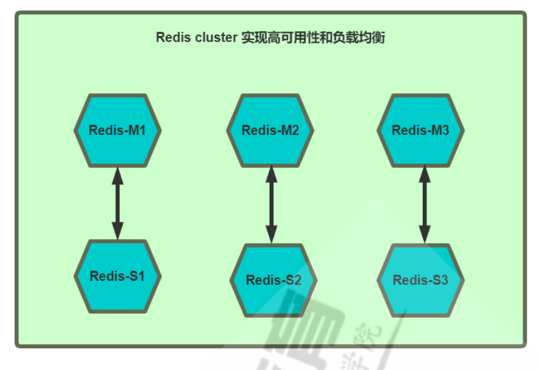
注意：①每个Redis 节点采用相同的相同的Redis版本、相同的密码、硬件配置
②所有Redis服务器必须没有任何数据
准备六台主机，地址如下：
10.0.0.184
1.2.2、启用redis cluster配置 ①每个节点修改redis配置，必须开启cluster功能的参数
1 2 [root@Rocky ~]
②验证当前Redis服务状态：
1 2 3 4 5 6 7 8 9 10 11 12 13
1.2.3、创建集群 1 2 3 4 5 6 7 8 9 10 11 12 13 14 15 16 17 18 19 20 21 22 23 24 25 26 27 28 29 30 31 32 33 34 35 36 37 38 39 40 41 42 43 44 45 46 47 48 49 50 51 52 53 54 55 56 57 58 59 hash slots allocation on 6 nodes...set the above configuration? (type 'yes' to accept): yes join the clusterfor the cluster to join for open slots...
1.2.4、验证集群 1.2.4.1、查看主从状态 1 2 3 4 5 6 7 8 9 10 11 12 13 [root@slave3 ~]
1.2.4.2、验证集群状态 1 2 3 4 5 6 7 8 9 10 11 12 13 14 15 16 17 [root@master1 ~]'-a' or '-u' option on the command line interface may not be safe.in 3 masters.
1.2.4.3、查看对应关系 1 2 3 4 5 6 7 8 9 10 11 12 13 14 15 16 17 18 19 20 21 22 23 24 25 26 [root@master1 ~]'-a' or '-u' option on the command line interface may not be safe.in 3 masters.
1.2.5测试集群写入数据 1 2 3 4 5 6 7 8 9 10 11 12 13 14 15 16 17 18 19 [root@master1 ~]integer ) 0set a b integer ) 0set a bset a w
1.2.6、模拟故障实现故障转移 1 2 3 4 5 6 7 8 9 10 11 12 13 14 15 16 17 18 19 20 21 22 23 24 25 26 27 28 29 30
1.2.7、验证数据是否同步 1 2 3 4 5 6 7 8 9 10 11 12 13 14 15 16 [root@master1 ~]'-a' or '-u' option on the command line interface may not be safe.integer ) 0set a winteger ) 1
二、LVS常用模型工作原理，及实现 2.1、LVS的工作原理 VS根据请求报文的目标IP和目标协议及端口将其调度转发至某RS，根据调度算法来挑选RS。LVS是内核级功能，工作在INPUT链的位置，将发往INPUT的流量进行“处理”
2.2、DR模型实现过程
LVS-DR：Direct Routing，直接路由，LVS默认模式,应用最广泛,通过为请求报文重新封装一个MAC首部进行转发，源MAC是DIP所在的接口的MAC，目标MAC是某挑选出的RS的RIP所在接口的MAC地址；源IP/PORT，以及目标IP/PORT均保持不变
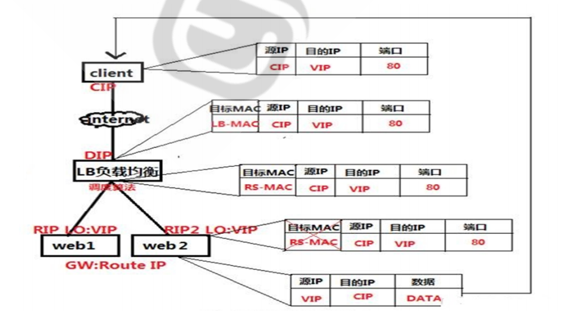
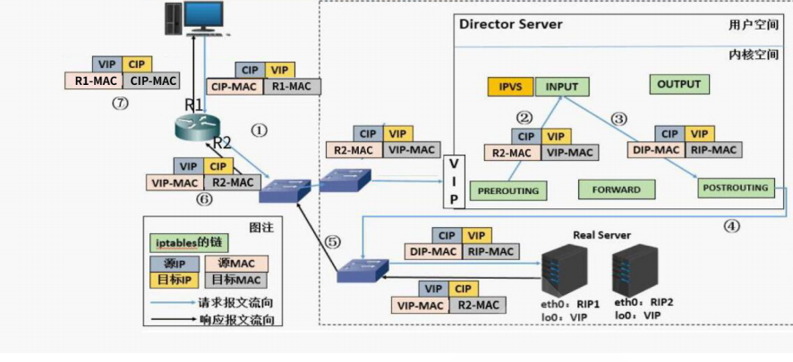
①Director和各RS都配置有VIP
②确保前端路由器将目标IP为VIP的请求报文发往Director
——在前端网关做静态绑定VIP和Director的MAC地址
——在RS上使用arptables工具
1 2 arptables -A IN -d $VIP -j DROP$VIP -j mangle --mangle-ip-s $RIP
——在RS上修改内核参数以限制arp通告及应答级别
1 2 /proc/sys/net/ipv4/conf/all/arp_ignore
③ RS的RIP可以使用私网地址，也可以是公网地址；RIP与DIP在同一IP网络；RIP的网关不能指向DIP，以确保响应报文不会经由Director
④ RS和Director要在同一个物理网络
⑤请求报文要经由Director，但响应报文不经由Director，而由RS直接发往Client
⑥不支持端口映射（端口不能修改）
⑦无需开启 ip_forward
三、LVS的负载策略有哪些，各应用在什么场景，通过LVS DR任意实现1-2种场景 3.1、负载策略及应用场景 ①NAT模型：由于配置简单，请求和回应都涉及LVS服务器（LVS服务器压力大），所以应用于并发量不大的中小企业。Real server服务器数量控制在10-20
②DR模型：并发量非常大的企业（DR模型的并发处理量能达到硬件级别的能力）。Real server服务器数量可以达到100
③TUN模型：TUN模式常会用来负载调度缓存服务器组，这些缓存服务器一般放置在不同的网络环境，可以就近折返给客户端。在请求对象不在Cache服务器本地命中的情况下，Cache服务器要向源服务器发送请求，将结果取回，最后将结果返回给用户。Real server服务器数量可以达到100
④FULLNAT模型：此模型主要是阿里云的二次开发使用。
3.2、LVS-DR模式单网段案例 3.2.1、环境 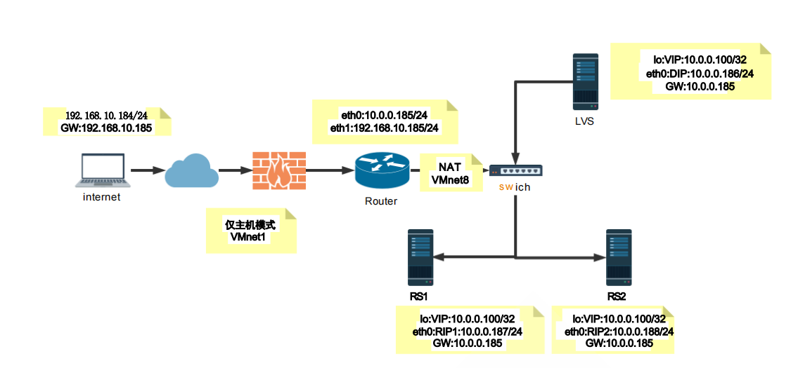
1 2 3 4 5 6 7 8 9 10 11 12 13 14 15 16 17 环境：5 台主机192.168.10.184 /24 GW:192.168.10.185 10.0.0.185 /24 192.168.10.185 /24 10.0.0.186 /24 GW:10.0.0.185 10.0.0.100 /32 10.0.0.187 /24 GW:10.0.0.185 10.0.0.100 /32 10.0.0.188 /24 GW:10.0.0.185 10.0.0.100 /32
3.2.2、LVS的网络配置 1 2 3 4 5 6 7 8 9 10 11 12 13 14 15 16 17 18 19 20 21 22 23 24 25 26 27 28 29 30 31 32 33 34 35 36 37 38 39 40 41 42 43 44 45 46 47 48 49 50 51 52 53 54 55 56 57 58 59 60 61 62 63 64 65 66 67 68 69 70 71 72 73 74 75 76 77 78 79 80 81 82 83 84 85 86 'Wired connection 1' (32b154a4-7f4d-32f0-aa39-a0cc460bd562) successfully deleted.
3.2.3、后端RS的IPVS配置 1 2 3 4 5 6 7 8 9 10 11 12 13 14 15 16 17 18 19 20 21 22 23 24 25 26 27 28 29 30 31 32 33 34 35 36 37 38 39 40 41 42 43 44 45 46 47 48 49 50 51 52 53 54 55 56 57 58 link /loopback 00:00:00:00:00:00 brd 00:00:00:00:00:00link /ether 00:50:56:2c:b4:3c brd ff:ff:ff:ff:ff:fflink link /loopback 00:00:00:00:00:00 brd 00:00:00:00:00:00link /ether 00:50:56:3c:10:b0 brd ff:ff:ff:ff:ff:fflink
3.2.4、LVS主机的配置 1 2 3 4 5 6 7 8 9 10 11 12 13 14 15 16 17 18 19 20 21 22 23 24 25 26 27 28 link /loopback 00:00:00:00:00:00 brd 00:00:00:00:00:00link /ether 00:50:56:3d:ba:4d brd ff:ff:ff:ff:ff:ff
3.2.5、测试访问 1 2 3 4 [root@internet ~]
四、web http协议通信过程，相关技术术语总结 4.1、http协议通信过程 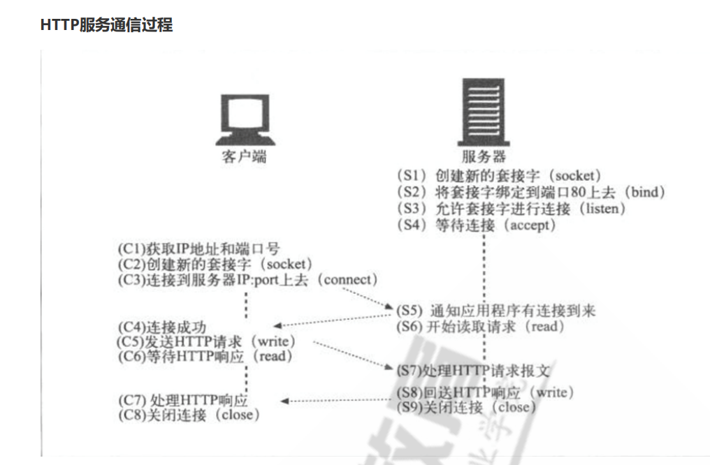
4.2、相关技术术语总结 4.2.1、WEB开发语言 http：Hyper Text Transfer Protocol 应用层协议，默认端口： 80/tcp
①html ：Hyper Text Markup Language 超文本标记语言，编程语言，主要负责实现页面的结构
②CSS ：Cascading Style Sheet 层叠样式表， 定义了如何显示（装扮） HTML 元素，比如：字体大小和颜色属性等。样式通常保存在外部的 .css 文件中,用于存放一些HTML文件的公共属性,从而通过仅编辑一个简单的 CSS 文档，可以同时改变站点中所有页面的布局和外观。
③Js ：javascript，实现网页的动画效果，但实属于静态资源
4.2.2、MIME MIME : Multipurpose Internet Mail Extensions 多用途互联网邮件扩展
文件 /etc/mime.types ,来自于mailcap包
MIME格式：type/subtype txt html jpg bmp
4.2.3、URI和URL URI ： Uniform Resource Identifier 统一资源标识，分为URL 和 URN
URN ：Uniform Resource Naming，统一资源命名
示例： P2P下载使用的磁力链接是URN的一种实现 magnet:?xt=urn:btih:660557A6890EF888666
URL ：Uniform Resorce Locator，统一资源定位符，用于描述某服务器某特定资源位置
两者区别 ：URN如同一个人的名称，而URL代表一个人的住址。换言之，URN定义某事物的身份，而
URL提供查找该事物的方法。URN仅用于命名，而不指定地址。
URL组成
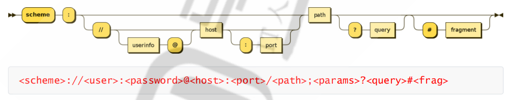
1 2 3 4 5 6 7 8 9 scheme: 方案，访问服务器以获取资源时要使用哪种协议user: 用户，某些方案访问资源时需要的用户名password: 密码，用户对应的密码，中间用：分隔Host: 主机，资源宿主服务器的主机名或IP地址port: 端口,资源宿主服务器正在监听的端口号，很多方案有默认端口号path: 路径,服务器资源的本地名，由一个/将其与前面的URL组件分隔params: 参数，指定输入的参数，参数为名/值对，多个参数，用query: 查询，传递参数给程序，如数据库，用？分隔,多个查询用&分隔frag: 片段,一小片或一部分资源的名字，此组件在客户端使用，用#分隔
五、总结网络IO模型和nginx架构 5.1、网络IO模型 阻塞型、非阻塞型、复用型、信号驱动型、异步
5.1.1、阻塞型I/O模型（blocking IO） 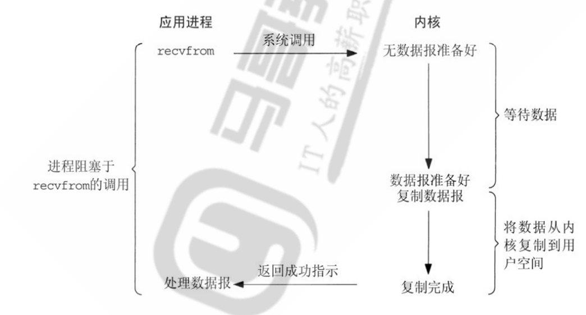
①阻塞IO模型是最简单的I/O模型，用户线程在内核进行IO操作时被阻塞
②用户线程通过系统调用read发起I/O读操作，由用户空间转到内核空间。内核等到数据包到达后，然后将
接收的数据拷贝到用户空间，完成read操作
③用户需要等待read将数据读取到buffer后，才继续处理接收的数据。整个I/O请求的过程中，用户线程是
被阻塞的，这导致用户在发起IO请求时，不能做任何事情，对CPU的资源利用率不够
优点 ：程序简单，在阻塞等待数据期间进程/线程挂起，基本不会占用 CPU 资源
缺点 ：每个连接需要独立的进程/线程单独处理，当并发请求量大时为了维护程序，内存、线程切换开销
较大，apache 的prefork使用的是这种模式。
5.1.2、非阻塞型I/O模型(nonblocking IO) 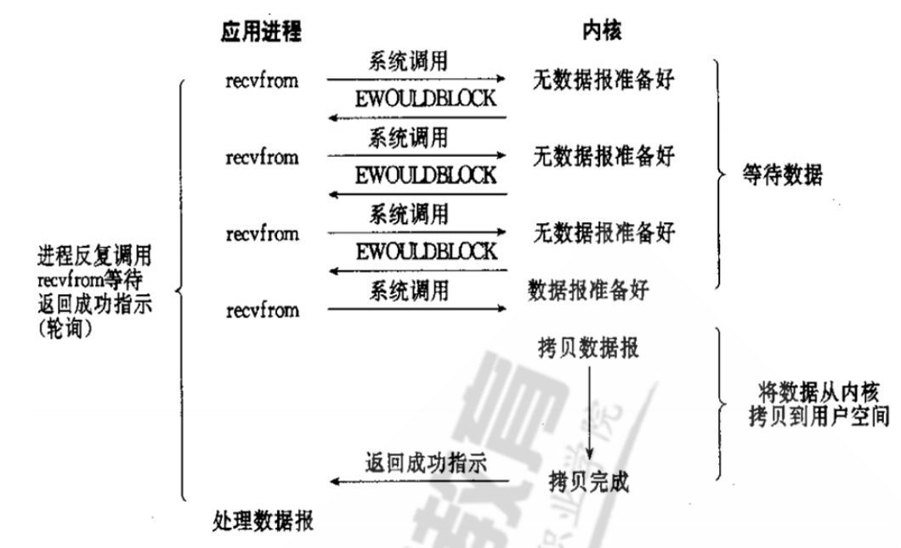
用户线程发起IO请求时立即返回。但并未读取到任何数据，用户线程需要不断地发起IO请求，直到数据
到达后，才真正读取到数据，继续执行。即 “轮询”机制存在两个问题：如果有大量文件描述符都要等，
那么就得一个一个的read。这会带来大量的Context Switch（read是系统调用，每调用一次就得在用户
态和核心态切换一次）。轮询的时间不好把握。这里是要猜多久之后数据才能到。等待时间设的太长，
程序响应延迟就过大;设的太短，就会造成过于频繁的重试，干耗CPU而已，是比较浪费CPU的方式，一
般很少直接使用这种模型，而是在其他IO模型中使用非阻塞IO这一特性。
5.1.3、I/O多路复用型(I/O multiplexing) ①多路复用IO指一个线程可以同时（实际是交替实现，即并发完成）监控和处理多个文件描述符对应各自
的IO，即复用同一个线程
②一个线程之所以能实现同时处理多个IO,是因为这个线程调用了内核中的SELECT,POLL或EPOLL等系统调
用，从而实现多路复用IO
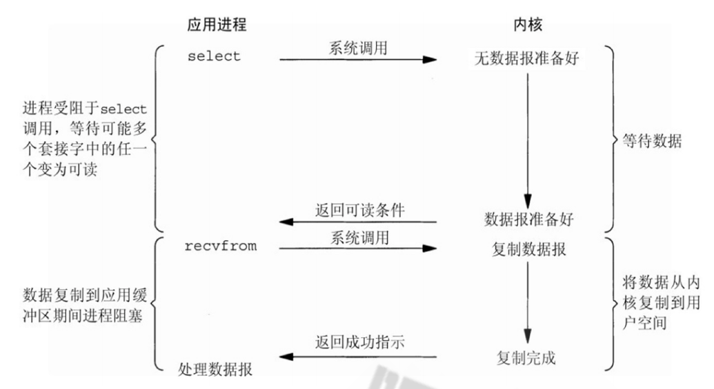
③它的基本原理就是select/poll/epoll这个function会不断的轮询所负责的所有socket，当某个socket有数
据到达了，就通知用户进程。
④当用户进程调用了select，那么整个进程会被block，而同时，kernel会“监视”所有select负责的socket，
当任何一个socket中的数据准备好了，select就会返回。这个时候用户进程再调用read操作，将数据从
kernel拷贝到用户进程。
优点 ：可以基于一个阻塞对象，同时在多个描述符上等待就绪，而不是使用多个线程(每个文件描述
符一个线程)，这样可以大大节省系统资源
缺点 ：当连接数较少时效率相比多线程+阻塞 I/O 模型效率较低，可能延迟更大，因为单个连接处
理需要 2 次系统调用，占用时间会有增加
IO多路复用适用如下场合 ：
当客户端处理多个描述符时（一般是交互式输入和网络套接口），必须使用I/O复用
当一个客户端同时处理多个套接字时，此情况可能的但很少出现
当一个服务器既要处理监听套接字，又要处理已连接套接字，一般也要用到I/O复用
当一个服务器即要处理TCP，又要处理UDP，一般要使用I/O复用
当一个服务器要处理多个服务或多个协议，一般要使用I/O复用
5.1.4、信号驱动式I/O模型(signal-driven IO)
信号驱动I/O的意思就是进程现在不用傻等着，也不用去轮询。而是让内核在数据就绪时，发送信号通知
进程。
调用的步骤 ：通过系统调用 sigaction ，并注册一个信号处理的回调函数，该调用会立即返回，然后
主程序可以继续向下执行，当有I/O操作准备就绪,即内核数据就绪时，内核会为该进程产生一个 SIGIO
信号，并回调注册的信号回调函数，这样就可以在信号回调函数中系统调用 recvfrom 获取数据,将用户
进程所需要的数据从内核空间拷贝到用户空间
此模型的优势在于等待数据报到达期间进程不被阻塞。用户主程序可以继续执行，只要等待来自信号处
理函数的通知。
在信号驱动式 I/O 模型中，应用程序使用套接口进行信号驱动 I/O，并安装一个信号处理函数，进程继
续运行并不阻塞
当数据准备好时，进程会收到一个 SIGIO 信号，可以在信号处理函数中调用 I/O 操作函数处理数据。
优点 ：线程并没有在等待数据时被阻塞，内核直接返回调用接收信号，不影响进程继续处理其他请求因此
可以提高资源的利用率
缺点 ：信号 I/O 在大量 IO 操作时可能会因为信号队列溢出导致没法通知
5.1.5、异步I/O模型(asynchronous IO) 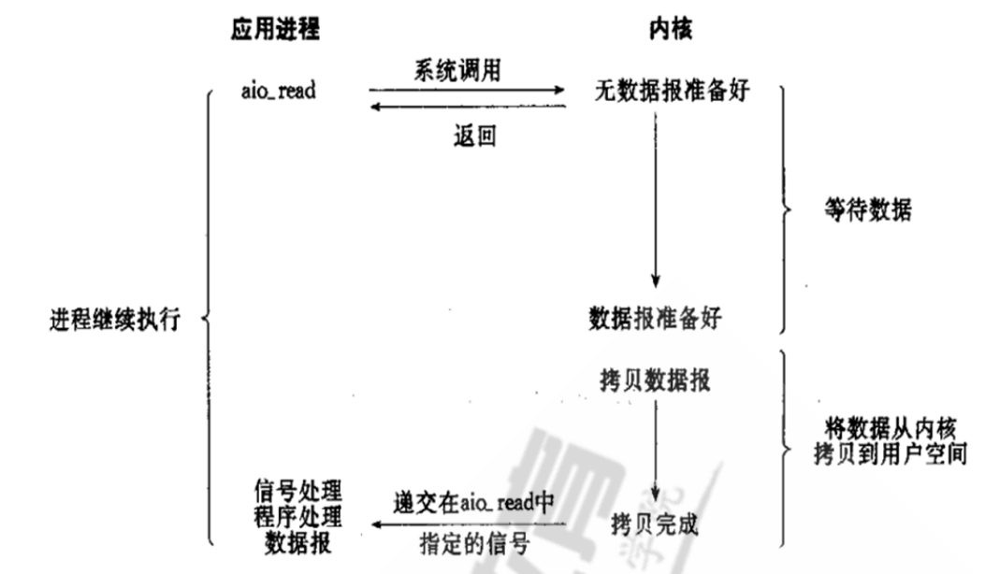
执行过程 ：用户进程进行aio_read系统调用之后，无论内核数据是否准备好，都会直接返回给用户进程，然后用户态进程可以去做别的事情。等到socket数据准备好了，内核直接复制数据给进程，然后从内核向进程发送通知。IO两个阶段，进程都是非阻塞的。
信号驱动IO当内核通知触发信号处理程序时，信号处理程序还需要阻塞在从内核空间缓冲区拷贝数据到
用户空间缓冲区这个阶段，而异步IO直接是在第二个阶段完成后，内核直接通知用户线程可以进行后续
操作了
优点 ：异步 I/O 能够充分利用 DMA 特性，让 I/O 操作与计算重叠
缺点 ：要实现真正的异步 I/O，操作系统需要做大量的工作。目前 Windows 下通过 IOCP 实现了真正的
异步 I/O，在 Linux 系统下，Linux 2.6才引入，目前 AIO 并不完善，因此在 Linux 下实现高并发网络编
程时以 IO 复用模型模式+多线程任务的架构基本可以满足需求
5.2、Nginx架构 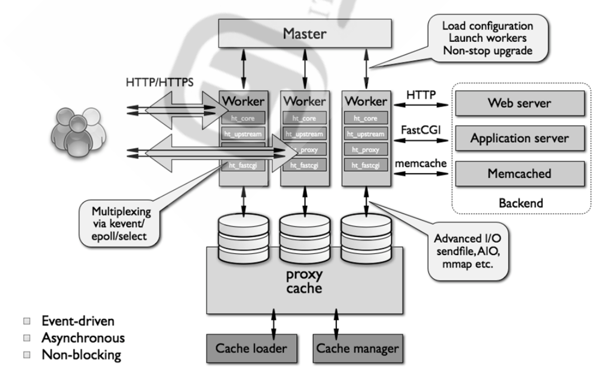
六、nginx总结核心配置和优化 6.1、Nginx的配置文件的组成部分 ①主配置文件：nginx.conf
②子配置文件: include conf.d/*.conf
③fastcgi， uwsgi，scgi 等协议相关的配置文件
④mime.types：支持的mime类型，MIME(Multipurpose Internet Mail Extensions)多用途互联网邮件扩展类型，MIME消息能包含文本、图像、音频、视频以及其他应用程序专用的数据，是设定某种扩展名的文件用一种应用程序来打开的方式类型，当该扩展名文件被访问的时候，浏览器会自动使用指定应用程序来打开。多用于指定一些客户端自定义的文件名，以及一些媒体文件打开方式。
MIME参考文档：https://developer.mozilla.org/zh-CN/docs/Web/HTTP/Basics_of_HTTP/MIME_Types
6.2、nginx 配置文件格式说明 1 2 3 4 5 6 7 8 配置文件由指令与指令块构成
6.3、主配置文件结构：四部分 1 2 3 4 5 6 7 8 9 10 11 12 13 14 15 16 17 18 19 20 21 22 23 24 25 26 directive value [value2 ...];set 命令定义,格式: set variable_name value;$variable_name
6.4、全局配置中的必备配置和优化 1 2 3 4 5 6 7 8 9 10 11 12 13 14 15 16 17 18 19 20 21 22 23 24 25 26 27 28 29 30 user nginx nginx;
6.5、http 协议配置中的必备配置和优化 1 2 3 4 5 6 7 8 9 10 11 12 13 14 15 16 17 18 19 20 21 22 23 24 25 26 27 28 29 30 31 32 33 34 35 36 37 38 39 40 41 42 43 44 45 46 47 48 49 50 51 52 53 54 55 56 57 58 59 60 61 62 63 64 65 66 67 68 69 70 71 72 73 74 75 76 77 78 79 80 81 82 83 84 85 86 87 88 89 90 91 92 93 94 95 96 97 http {
七、使用脚本完成一键编译安装nginx任意版本 1 2 3 4 5 6 7 8 9 10 11 12 13 14 15 16 17 18 19 20 21 22 23 24 25 26 27 28 29 30 31 32 33 34 35 36 37 38 39 40 41 42 43 44 45 46 47 48 49 50 51 52 53 54 55 56 57 58 59 60 61 62 63 64 65 66 67 68 69 70 71 72 73 74 75 76 77 78 79 80 81 82 83 84 85 86 87 88 89 90 91 #!/bin/bash1.20 .2 '/^CPU\(s\)/{print $2}' `'[ "]' '/^NAME/{print $2}' /etc/os-release'"' '/^VERSION_ID/{print $2}' /etc/os-releasee ${NGINX_INSTALL_DIR} ] && { color "nginx 已安装,请卸载后再安装" 1 ; exit ; }cd ${SRC_DIR}if [ -e ${NGINX_FILE}${TAR} ];then"相关文件已准备好" 0 else '开始下载 nginx 源码包' 0 0 ] && { color "下载 ${NGINX_FILE}${TAR}文件失败" 1 ; exit ; } "开始安装 nginx" 0 if id nginx &> /dev/null;then"nginx 用户已存在" 1 else "创建 nginx 用户" 0 "开始安装 nginx 依赖包" 0 if [ $ID == "centos" ] ;thenif [[ $VERSION_ID =~ ^7 ]];theny -q install make gcc pcre-devel openssl-devel zlib-devel perl -ExtUtils-Embed8 ]];theny -q install make gcc-c ++ libtool pcre pcre-devel zlib zlib-devel openssl openssl-devel perl -ExtUtils-Embed else '不支持此系统!' 1 exit "rocky" ];theny -q install make gcc-c ++ libtool pcre pcre-devel zlib zlib-devel openssl openssl-devel perl -ExtUtils-Embed else update &> /dev/nully install make gcc libpcre3 libpcre3-dev openssl libssl-dev zlib1g-dev &> /dev/nullcd $SRC_DIRecho ${NGINX_FILE}${TAR}| sed -nr 's/^(.*[0-9]).*/\1/p' `cd ${NGINX_DIR}make -j $CPUS && make install 0 ] && color "nginx 编译安装成功" 0 || { color "nginx 编译安装失败,退出!" 1 ;exit ; }echo "PATH=${NGINX_INSTALL_DIR}/sbin:${PATH}" > /etc/profile .d/nginx.sh cat > /lib/systemd/system /nginx.service <<EOFand reverse proxy serverf ${NGINX_INSTALL_DIR}/logs/nginx.pid5 100000 is -active nginx &> /dev/null || { color "nginx 启动失败,退出!" 1 ; exit ; }"nginx 安装完成" 0
八、任意编译一个第3方nginx模块，并使用 nginx-module-vts模块实现流量监控
1 https://github.com/vozlt/nginx-module-vts
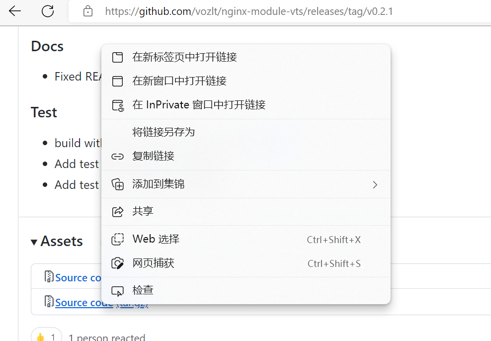
1 2 3 4 5 6 7 8 9 10 11 12 13 14 15 16 17 18 19 20 21 22 23 24 25 26 27 28 29 30 31 [root@Rocky ~]
添加监控模块前
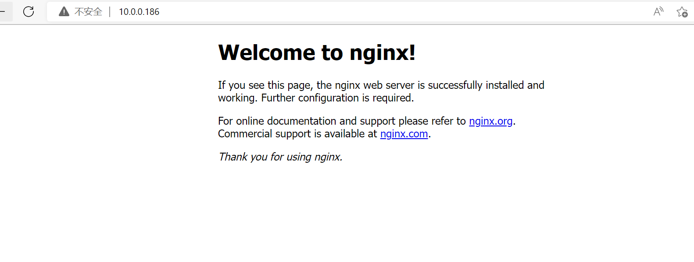
添加监控模块后
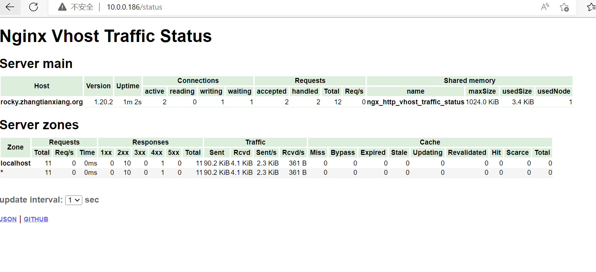